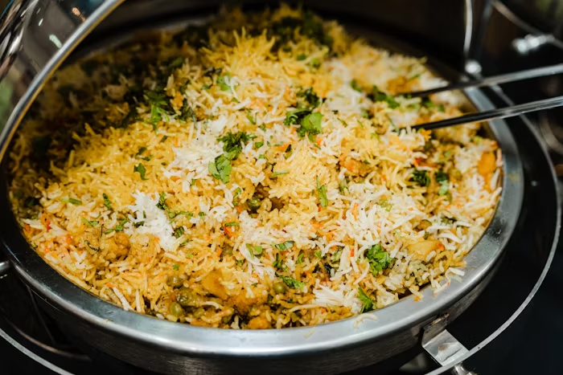

Biryani

Description
Ingredients
- 3 cups basmati rice
- 1 kg chicken, cut into pieces
- 1 cup plain yogurt
- 2 large onions, thinly sliced
- 2 medium tomatoes, chopped
- 2 tablespoons ginger-garlic paste
- 1/2 cup fresh mint leaves, chopped
- 1/2 cup fresh coriander leaves, chopped
- 1/2 teaspoon turmeric powder
- 1 teaspoon red chili powder
- 1 teaspoon garam masala
- 1/2 teaspoon saffron strands soaked in 1/4 cup warm milk
- 4 green chilies, slit
- 4 tablespoons ghee or oil
- 4 cups water
- Salt to taste
- Whole spices (4 cardamom pods, 4 cloves, 2-inch cinnamon stick, 2 bay leaves)
Steps
- Wash the basmati rice thoroughly and soak it in water for 30 minutes. Drain and set aside.
- Marinate the chicken with yogurt, ginger-garlic paste, turmeric powder, red chili powder, garam masala, mint
leaves, coriander leaves, and salt. Let it rest for at least 1 hour.
- Heat ghee or oil in a large skillet. Fry the sliced onions until golden brown and crispy. Remove half of the
fried onions and set aside for garnishing.
- In the same skillet, add the marinated chicken and cook on medium heat until the chicken is partially cooked
and the oil separates. Add chopped tomatoes and cook until they soften.
- In a large pot, bring 4 cups of water to a boil. Add salt and the whole spices (cardamom, cloves, cinnamon,
bay leaves). Add the soaked rice and cook until it is 70% cooked. Drain the rice and set aside.
- In a heavy-bottomed pot, layer half of the partially cooked rice. Add the cooked chicken mixture on top,
followed by the remaining rice.
- Drizzle the saffron milk over the top layer of rice. Add the reserved fried onions, mint leaves, and
coriander leaves. Cover the pot with a tight-fitting lid.
- Cook on low heat (dum) for 25-30 minutes, ensuring the steam does not escape. You can seal the lid with
dough for an authentic dum cooking method.
- Once done, gently fluff the biryani with a fork, ensuring the layers remain intact. Serve hot with raita or
salad.
Home